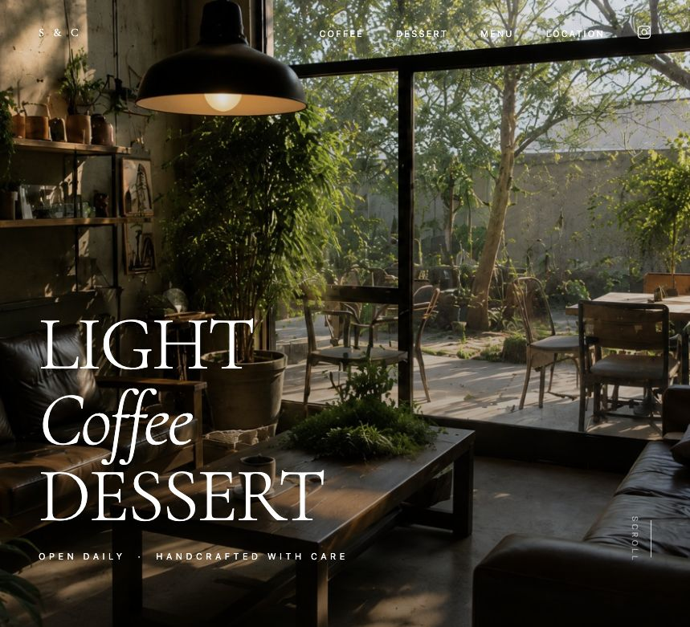
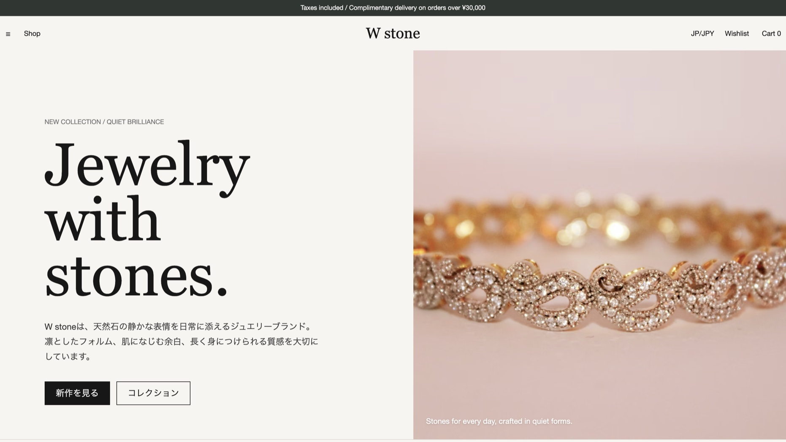
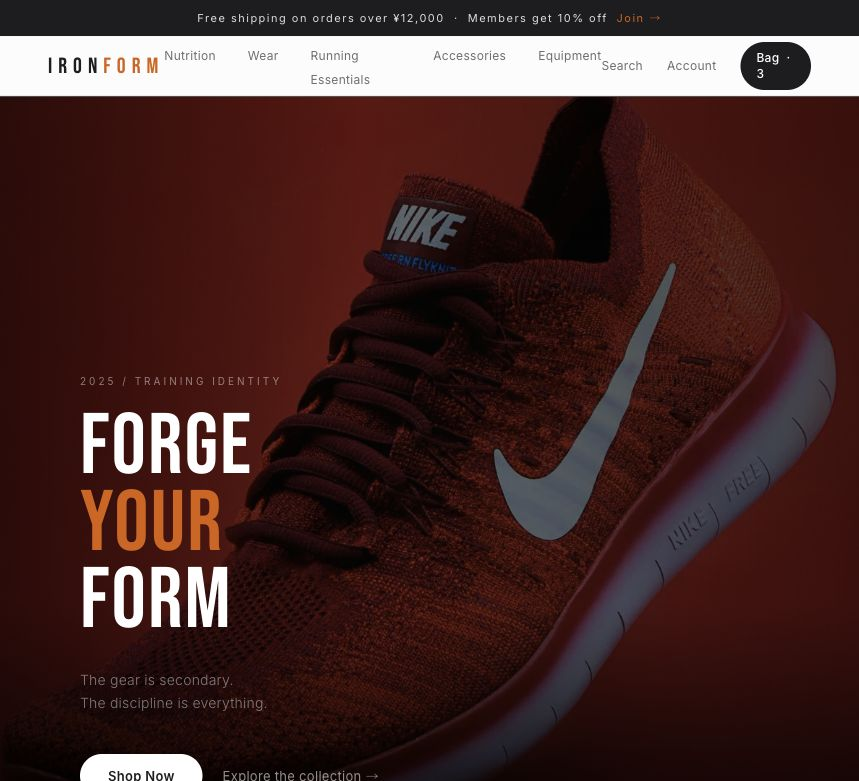

Cafe website
Sunlight & Coffee
レスポンシブ対応、SEO調整、画像スライダー、店舗情報セクションまで整えたカフェサイト。

Cafe website
レスポンシブ対応、SEO調整、画像スライダー、店舗情報セクションまで整えたカフェサイト。

Jewelry EC
商品一覧、詳細導線、OGP設定、ブランド感のある余白設計を組み込んだジュエリーEC。

Fitness EC
商品訴求、スライダー、レスポンシブUI、強いコントラスト設計で構成したフィットネスEC。
Web design / Frontend
制作したWebサイトをスライドで見られるポートフォリオです。デザイン、実装、公開まで自分で進めた作品を掲載しています。
About me
普段からCodexやClaudeなどの生成AIを活用していて、フライヤー制作、Web制作の学習などに日常的に取り入れています。
現在コーディングの実務経験は多くありませんが、その分素直に学び、責任を持って最後までやり遂げることを大切にしています。
Contact
制作会社・Webデザイン会社で、デザインと実装の両方に関わるポジションを目指しています。